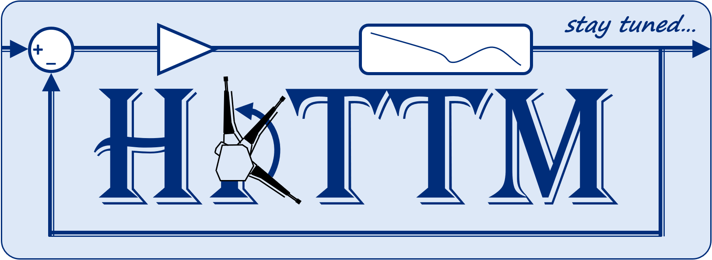

Yıl sonu buluşması 2026
Hareket Kontrol Teknolojileri Tasarım Müdürlüğü'nün yıl sonu organizasyonu için beş araştırma sayfası. Fiyatlar 23 Kasım 2026 tarihlidir.
- 1 Hediye fiyat araştırmasıTül kesede verilecek on kalem için fiyatlar ve kaynaklar, 50 kişi ve kişi başı 300 TL sınırına göre beş kese kombinasyonu, üç hazır kart tasarımı.
- 2 Altın PID ödülleriKontrol, makine ve mekatronik esprili altmış kategori, on ödüllük çekirdek liste, kimsenin gücenmemesi için seçim kuralları, tören akışı.
- 3 Etkinlikler ve kase videosuKase videosu için altmış soru, çekim planı, yazdırılabilir soru şeritleri ve on yedi etkinlik önerisi.
- 4 Kübik süsleme yarışmasıBütçe tavanı, yükseklik ve alan sınırları, güvenlik kuralları, puanlama cetveli ve takvim.
- Altın PID tören sunumuTörende projeksiyonda oynatılacak slaytlar: her ödül için grafik, zarf cümlesi ve kazanan açıklaması.
- 2027 kontrol teorisi takvimiTombala ödülü için LaTeX ile hazırlanmış takvim: A2 duvar posteri, 13 sayfalık masa takvimi ve karton ayak şablonu; HKTTM logosu ve laciverti ile. Kaynak dosyalar takvim klasöründe.
- 5 Plan ve ek detaylarEtkinlik gününe göre iş takvimi, doksan dakikalık akış, toplam bütçe, duyuru e-postası taslağı ve kontrol listeleri.
Karar bekleyen dört konu
- Kese içeriği. On kalemin hepsi kişi başı yaklaşık 288 TL ile sınıra sığıyor. Önerilen kombinasyon 238 TL: LÖSEV kurabiyesi kesede değil ikram masasında, kalem isimli. LÖSEV'in mağazasında şu an yılbaşı temalı kurabiye yok. Ayrıntı birinci sayfada.
- Video izni. Kase videosunun çekimi ve Instagram'da paylaşımı kurumun güvenlik ve iletişim kurallarına bağlı. Onay çıkmazsa video yalnızca etkinlikte gösterilir.
- Etkinlik günü. Hesaplar 50 kişiye göre yapıldı. Etkinlik günü 30 Aralık 2026 Çarşamba varsayıldı; plan sayfasındaki kutudan değiştirilebilir ve takvim buna göre yenilenir.
- Kübik bütçe tavanı. Öneri kişi başı 250 TL. Gerekçesi dördüncü sayfada.